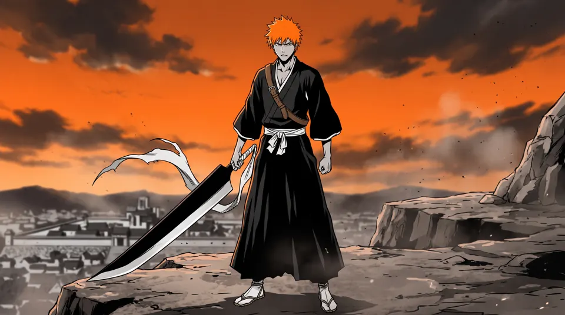
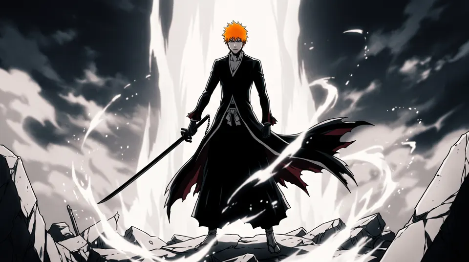
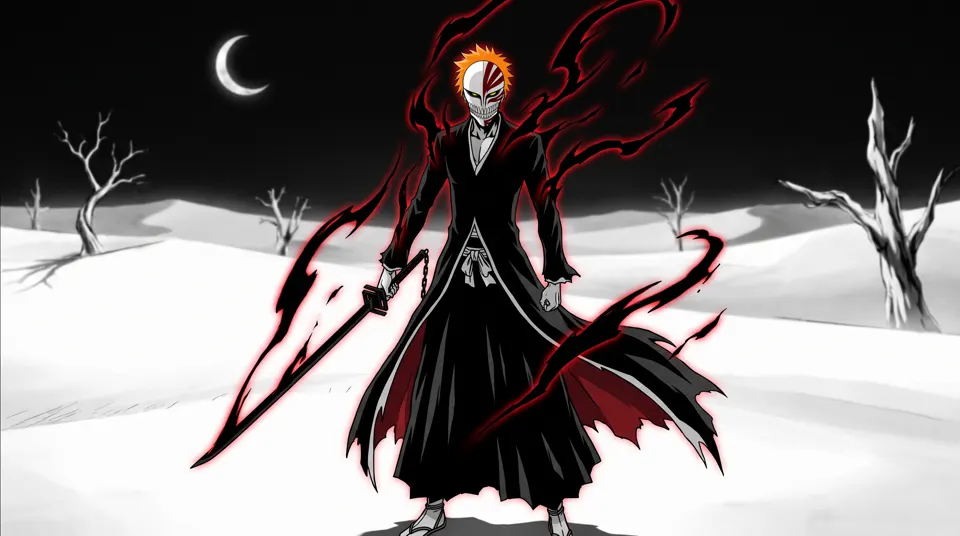
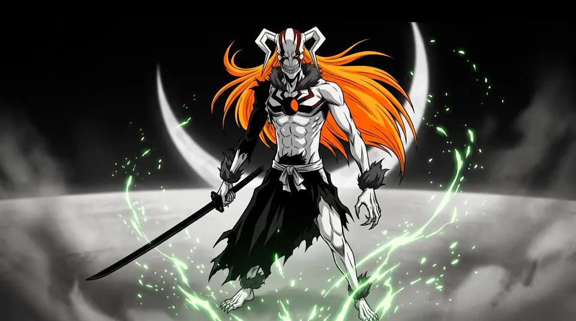
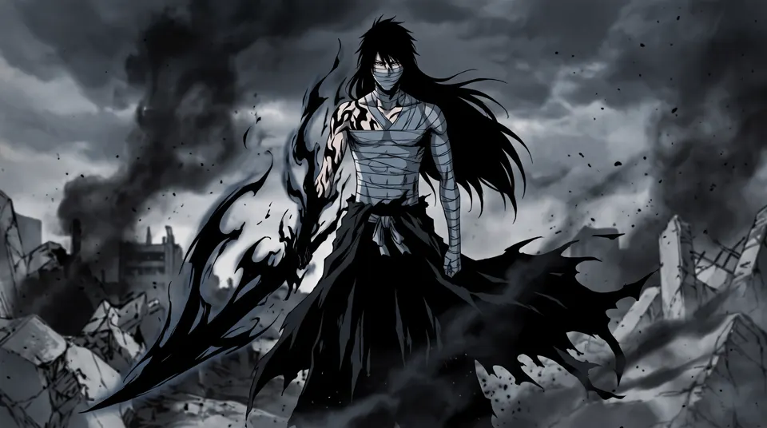
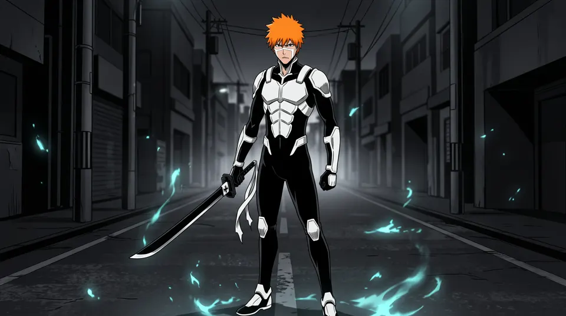
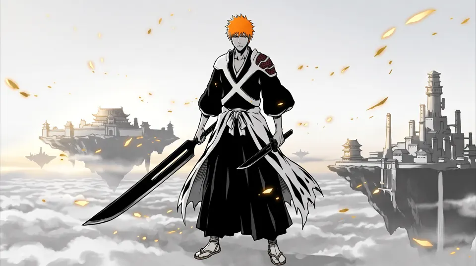
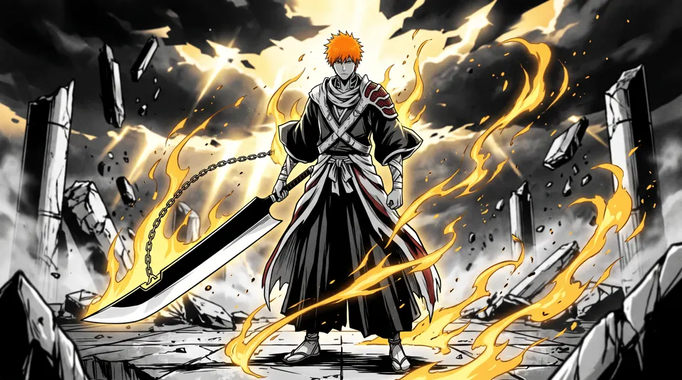
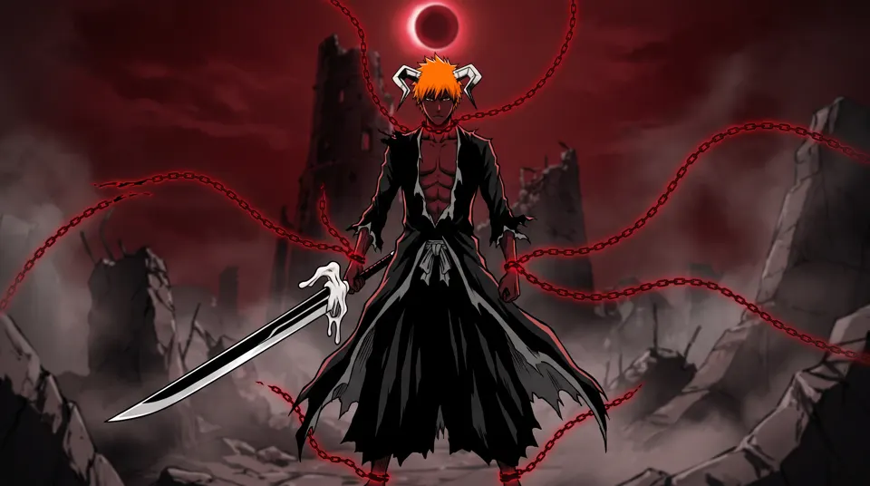

01 / 09
Zangetsu
Shikai · Substitute Shinigami
Always released. Zangetsu has no guard and no real hilt — Ichigo grips the cloth-wrapped tang of a blade as tall as he is.

Bleach · 2004–2026 · fan tribute
01 / 09
Shikai · Substitute Shinigami
Always released. Zangetsu has no guard and no real hilt — Ichigo grips the cloth-wrapped tang of a blade as tall as he is.

02 / 09
Bankai · vs Byakuya Kuchiki
Most Bankai grow into something enormous. His shrinks into a black daitō, compressing all that power into raw speed.

03 / 09
Visored · vs Grimmjow
At first he could hold the mask for four seconds. Training with the Visored stretched it to eleven.

04 / 09
Hollow · vs Ulquiorra
His sanity overwhelmed, he won as a pure Hollow — a form that left Ichigo afraid of his own power.

05 / 09
Mugetsu · vs Aizen
He becomes Getsuga itself. One swing of Mugetsu costs him every last bit of his Shinigami power.

06 / 09
Lost Agent · vs Ginjō
Powerless, he drew out the soul of his Substitute Shinigami badge until it clad him head to toe.

07 / 09
Reforged Shikai · Thousand-Year Blood War
Reforged by Ōetsu Nimaiya: two black blades, one for each side of his heritage.

08 / 09
True Bankai · vs Yhwach
Laid side by side, the two blades fuse into one. Yhwach broke it the moment it appeared.

09 / 09
Hollow Bankai · final battle vs Yhwach
A blood-red moon slides into eclipse. Five chains of reiatsu stream from his neck, hands and feet.

October 26, 2026
The Bleach anime premiered on TV Tokyo on October 5, 2004. The original series ran for 366 episodes until March 2012, then went quiet for a decade. In October 2022, Thousand-Year Blood War returned to adapt Tite Kubo's final manga arc.
On October 26, 2026 (October 27 in Japan), its 50th and final episode, Death & Strawberry, closes the story. The title echoes the manga's very first chapter, Death and the Strawberry.
This page is a thank-you. It follows nine of Ichigo Kurosaki's forms, from the cleaver-sized Zangetsu he picked up as a Substitute Shinigami to the Blood Chains of his last fight with Yhwach, joined into one unbroken shot that plays as you scroll.
Jump back in
FAQ
Tensa Zangetsu (天鎖斬月). Most Bankai grow into something enormous, but Ichigo's compresses into a slim black daitō and trades size for speed. He first used it against Byakuya Kuchiki in the Soul Society arc.
During the Thousand-Year Blood War, Ōetsu Nimaiya reforged Zangetsu into two black blades, one for each side of Ichigo's heritage. Laid side by side, they fuse into his True Bankai, True Tensa Zangetsu.
Nine, in story order: Zangetsu (Shikai), Tensa Zangetsu (Bankai), the Hollow mask, Full Hollowfication, the Final Getsuga Tenshō, Fullbring, True Zangetsu, True Tensa Zangetsu and Blood Chains.
The Bleach anime premiered on TV Tokyo on October 5, 2004. The original series ran for 366 episodes until March 2012, and Thousand-Year Blood War brought it back in October 2022. Its 50th and final episode, “Death & Strawberry”, released on October 26, 2026 (October 27 in Japan), ending a 22-year run.
No. This is an unofficial, non-commercial fan tribute. Bleach and all of its characters are © Tite Kubo / Shueisha, and every image and frame on this page was generated with AI.